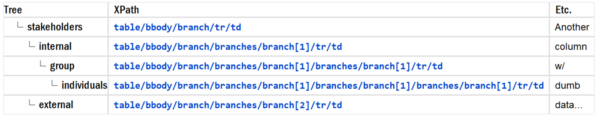
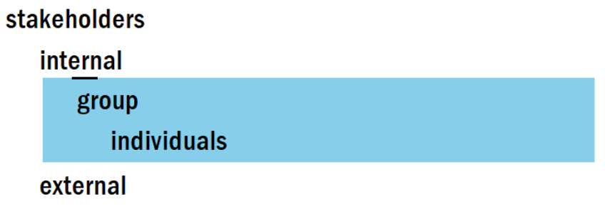

<bbody/>, <branches/>, <branch/>
— Hierarchical tablesThe first hierarchical table was developed to do stakeholder analysis. The generalized implementation uses a specialized table body element: <bbody/>. Changing @display switches between the full table and a simplified blocks view, which makes it easier to restructure the branches.
Figure 15. table/@display="table" (columns displayed for data processing)
|  |
Figure 16. table/@display="block" (columns hidden for tree processing)
|  |
Figure 17. <bbody/> markup
<table shindent="show" hs="corner" display="block" shfocus="show">
<bbody>
<branch>
<tr>
<th id="th">stakeholders</th>
<td><xpath>table/bbody/branch/tr/td</xpath></td>
</tr>
<branches>
<branch>
<tr>
<th>internal</th>
<td><xpath>table/bbody/branch/branches/branch[1]/tr/td</xpath></td>
</tr>
<branches>
<branch>
<tr>
<th>group</th>
<td><xpath>table/bbody/branch/branches/branch[1]/</xpath><xpath>branches/branch[1]/tr/td</xpath></td>
</tr>
<branches>
<branch>
<tr>
<th>individuals</th>
<td><xpath>table/bbody/branch/branches/branch[1]/<xpath>branches/branch[1]/<xpath>branches/branch[1]/tr/td</xpath></xpath></xpath></td>
</tr>
</branch>
</branches>
</branch>
</branches>
</branch>
<branch>
<tr>
<th>external</th>
<td><xpath>table/bbody/branch/branches/branch[2]/tr/td</xpath></td>
</tr>
</branch>
</branches>
</branch>
</bbody>
</table>